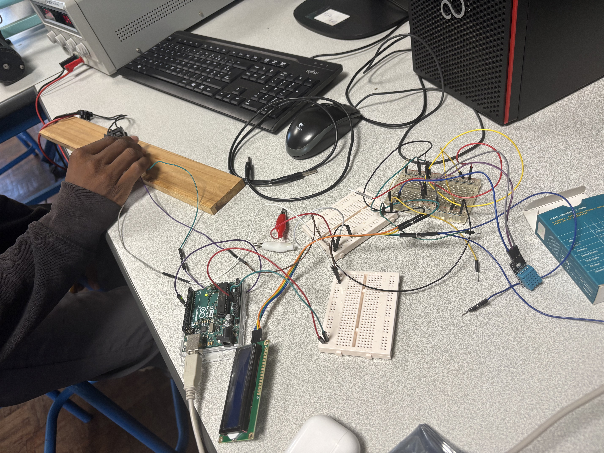

Fonctionnement : Le système s'appuie sur trois capteurs DHT11 pour cartographier la chaleur (extérieur, source, boîtier). Une boucle fermée gère l'asservissement : si la température dépasse 45°C, le ventilateur s'active et sa vitesse augmente par paliers, via une commande PWM.

Intégration du système dans un boîtier PC pour tests réels avec source chauffante

Montage électronique (Arduino, écran LCD I2C, câblage)
#include <DHT.h>
#include <Wire.h>
#include <LiquidCrystal_I2C.h>
// ======================================================
// CONFIGURATION
// ======================================================
#define DHTTYPE DHT11
// DHT11
#define DHT_EXT 5 // Température extérieure
#define DHT_SRC 6 // Température près de la résistance
#define DHT_BOX 7 // Température dans le boîtier
// Ventilateur 4 broches
#define FAN_PWM 9 // Fil bleu : PWM
#define TACH_PIN 2 // Fil jaune : tachymètre
// LCD I2C
LiquidCrystal_I2C lcd(0x27, 16, 2);
// Capteurs
DHT dhtExt(DHT_EXT, DHTTYPE);
DHT dhtSrc(DHT_SRC, DHTTYPE);
DHT dhtBox(DHT_BOX, DHTTYPE);
// Compteur d'impulsions du tachymètre
volatile unsigned long pulseCount = 0;
// ======================================================
// INTERRUPTION DU TACHYMETRE
// ======================================================
void countPulse()
{
pulseCount++;
}
// ======================================================
// SETUP
// ======================================================
void setup()
{
Serial.begin(9600);
// Initialisation des DHT11
dhtExt.begin();
dhtSrc.begin();
dhtBox.begin();
// PWM du ventilateur
pinMode(FAN_PWM, OUTPUT);
// Tachymètre
pinMode(TACH_PIN, INPUT_PULLUP);
// Interruption sur le tachymètre
attachInterrupt(
digitalPinToInterrupt(TACH_PIN),
countPulse,
FALLING
);
// LCD
lcd.init();
lcd.backlight();
lcd.clear();
lcd.setCursor(0, 0);
lcd.print("Systeme thermique");
lcd.setCursor(0, 1);
lcd.print("Initialisation");
delay(2000);
lcd.clear();
// En-tête pour Excel
Serial.println(
"Temps(s);"
"Text(C);"
"Tsource(C);"
"Tboitier(C);"
"Veq(V);"
"PWM;"
"RPM"
);
}
// ======================================================
// LOOP
// ======================================================
void loop()
{
// 1. LECTURE DES TEMPERATURES
float Text = dhtExt.readTemperature();
float Tsrc = dhtSrc.readTemperature();
float Tbox = dhtBox.readTemperature();
if (isnan(Text) || isnan(Tsrc) || isnan(Tbox))
{
Serial.println("ERREUR : lecture d'un DHT11 impossible");
lcd.clear();
lcd.setCursor(0, 0);
lcd.print("Erreur capteur");
delay(2000);
return;
}
// 2. DETERMINATION DE LA COMMANDE DU VENTILATEUR
int pwm = 0;
int tensionEquivalent = 0;
if (Tbox < 45) {
pwm = 0;
tensionEquivalent = 0;
}
else if (Tbox < 50) {
pwm = 170;
tensionEquivalent = 8;
}
else if (Tbox < 55) {
pwm = 191;
tensionEquivalent = 9;
}
else if (Tbox < 65) {
pwm = 212;
tensionEquivalent = 10;
}
else if (Tbox < 75) {
pwm = 234;
tensionEquivalent = 11;
}
else {
pwm = 255;
tensionEquivalent = 12;
}
// Application du PWM
analogWrite(FAN_PWM, pwm);
// 3. MESURE DU TACHYMETRE
noInterrupts();
pulseCount = 0;
interrupts();
unsigned long debutMesure = millis();
while (millis() - debutMesure < 1000) {
// Les impulsions sont comptées automatiquement
}
noInterrupts();
unsigned long pulses = pulseCount;
interrupts();
// 4. CALCUL DES RPM
float rpm = pulses * 30.0;
// 5. AFFICHAGE LCD
lcd.clear();
lcd.setCursor(0, 0);
lcd.print("T:");
lcd.print(Tbox, 1);
lcd.print((char)223);
lcd.print("C");
lcd.setCursor(9, 0);
lcd.print("RPM");
lcd.setCursor(0, 1);
lcd.print("Fan:");
lcd.print(tensionEquivalent);
lcd.print("V");
lcd.setCursor(9, 1);
lcd.print((int)rpm);
// 6. EXPORT DES DONNEES POUR EXCEL
float temps = millis() / 1000.0;
Serial.print(temps); Serial.print(";");
Serial.print(Text, 1); Serial.print(";");
Serial.print(Tsrc, 1); Serial.print(";");
Serial.print(Tbox, 1); Serial.print(";");
Serial.print(tensionEquivalent); Serial.print(";");
Serial.print(pwm); Serial.print(";");
Serial.println(rpm);
delay(1000);
}